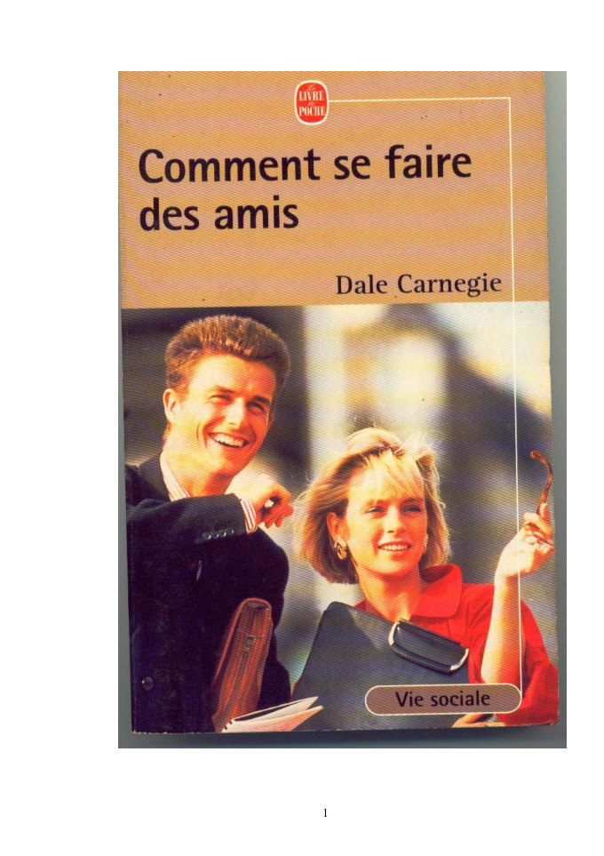
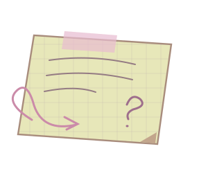

Comment se faire des amis





Carte d’identité
- Auteur
- Dale Carnegie
- Genre
- Vie et société
- Sous-genre
- Développement personnel
- Éditeur
- Non renseigné
- Parution de l’édition
- Non établie
- Première parution
- 1936
- ISBN
- Non confirmé
- Autres ISBN
- 9782253238713 (autre édition, Le Livre de Poche, 2023)
- Langue de l’édition
- Français
- Fichier du site
- PDF · 262 pages
Le PDF reproduit une version française révisée avec une préface de Dorothy Carnegie. Son tirage exact reste à identifier.
 Résumé du livreL’essentiel en quelques lignes
Résumé du livreL’essentiel en quelques lignes
Dale Carnegie rassemble des situations de conversation, de désaccord et de travail pour montrer comment améliorer ses relations. Il revient sur l’attention accordée aux autres, la manière de donner un retour et le besoin de garder sa dignité. Les exemples aident à voir comment une même idée s’applique à des contextes différents.
 Chapitre par chapitre30 entrées
Chapitre par chapitre30 entrées
-
01 Réagir à une fautePDF p. 22
Carnegie explique pourquoi une attaque personnelle pousse souvent l’autre à se justifier. Il propose d’essayer de comprendre ce qui a motivé son comportement.
Lire à cette page ↗ -
02 Exprimer une reconnaissance réellePDF p. 39
L’auteur s’intéresse au besoin de se sentir apprécié. Il distingue un compliment fondé sur une observation d’une flatterie faite pour obtenir quelque chose.
Lire à cette page ↗ -
03 Partir de ce que veut l’autrePDF p. 54
Pour faire accepter une proposition, Carnegie invite à la présenter du point de vue de celui qui va décider. Cela oblige à regarder ce que l’échange peut lui apporter.
Lire à cette page ↗ -
04 S’intéresser à la personnePDF p. 76
L’intérêt que l’on montre pour les activités et les préoccupations de l’autre crée un terrain de rencontre. Le chapitre donne des exemples de cette attention.
Lire à cette page ↗ -
05 Accueillir avec chaleurPDF p. 90
Carnegie prend le sourire comme exemple d’un accueil qui peut rendre un premier échange plus facile. Il le rattache à la disposition avec laquelle on aborde les autres.
Lire à cette page ↗ -
06 Se souvenir d’un nomPDF p. 99
Retenir puis utiliser le nom d’une personne est une manière de montrer qu’on l’a remarquée. Le texte donne des exemples où ce détail change la relation.
Lire à cette page ↗ -
07 Faire de la place à l’écoutePDF p. 107
Une conversation peut laisser une bonne impression quand on pose des questions sincères et qu’on laisse l’autre aller au bout de son récit.
Lire à cette page ↗ -
08 Parler de ce qui l’intéressePDF p. 118
Avant une rencontre, on peut se renseigner sur les sujets que l’autre connaît ou aime. L’auteur y voit un point de départ pour un échange plus vivant.
Lire à cette page ↗ -
09 Reconnaître l’importance de l’autrePDF p. 123
Le chapitre recommande d’exprimer de façon sincère ce que l’on apprécie chez une personne. Il passe du simple compliment à une attitude de respect.
Lire à cette page ↗ -
10 Éviter la dispute stérilePDF p. 135
Une dispute peut laisser chacun plus attaché à sa position. Carnegie invite à se demander si l’objectif est de gagner un débat ou de faire avancer la relation.
Lire à cette page ↗ -
11 Respecter un désaccordPDF p. 143
Dire brutalement à quelqu’un qu’il se trompe ferme souvent la conversation. Le chapitre propose d’examiner les faits en laissant à l’autre une place pour revenir sur son idée.
Lire à cette page ↗ -
12 Reconnaître sa propre erreurPDF p. 154
Carnegie raconte des situations où admettre une faute rapidement change le ton de l’échange. Ce geste réduit le besoin de se défendre.
Lire à cette page ↗ -
13 Ouvrir la discussion avec calmePDF p. 162
Un accueil amical facilite le dialogue quand les personnes sont déjà en désaccord. L’auteur fait de cette première impression une condition de la suite.
Lire à cette page ↗ -
14 Trouver des accords de départPDF p. 172
Inspiré par les questions de Socrate, le chapitre invite à commencer par les points communs. On peut ensuite aborder le désaccord sur une base partagée.
Lire à cette page ↗ -
15 Laisser l’autre s’expliquerPDF p. 179
Plus la personne parle de sa situation, plus on a de chances de comprendre ses raisons. Carnegie conseille de résister à l’envie de répondre trop vite.
Lire à cette page ↗ -
16 Construire une idée ensemblePDF p. 185
Une personne peut s’engager davantage quand elle participe à une décision. L’auteur donne des exemples où le responsable laisse l’initiative à son interlocuteur.
Lire à cette page ↗ -
17 Adopter son point de vuePDF p. 191
Le chapitre recommande d’imaginer la situation telle que l’autre la voit. Cela aide à faire une proposition qui tient compte de ses contraintes.
Lire à cette page ↗ -
18 Accueillir ses émotionsPDF p. 196
Reconnaître ce que l’autre souhaite ou ce qui l’inquiète peut apaiser l’échange. Le chapitre montre la différence entre entendre un sentiment et trancher le désaccord.
Lire à cette page ↗ -
19 Faire appel à un motif honorablePDF p. 203
Carnegie observe que beaucoup de personnes aiment se voir comme justes ou fiables. Il s’appuie sur cette image pour expliquer certaines formes d’appel à la coopération.
Lire à cette page ↗ -
20 Montrer une idéePDF p. 209
Au lieu de s’en tenir à une explication abstraite, le chapitre propose de donner à voir ce que l’on avance. Un exemple concret peut rendre une idée plus mémorable.
Lire à cette page ↗ -
21 Proposer un défiPDF p. 214
L’auteur décrit des situations où un objectif stimulant redonne de l’élan. Il relie cette motivation au goût de se dépasser.
Lire à cette page ↗ -
22 Commencer par une qualité réellePDF p. 218
Pour aborder un point difficile, Carnegie conseille d’abord de reconnaître ce qui est bien fait. Cela donne un cadre plus favorable à la suite de la discussion.
Lire à cette page ↗ -
23 Signaler une erreur avec tactPDF p. 224
Une correction peut être formulée de manière à éviter l’humiliation. Le chapitre montre comment faire remarquer un problème sans transformer la remarque en attaque.
Lire à cette page ↗ -
24 Rappeler ses propres erreursPDF p. 229
En parlant d’un échec qu’il a connu, le responsable diminue la distance avec son interlocuteur. La correction devient plus facile à entendre.
Lire à cette page ↗ -
25 Inviter plutôt que commanderPDF p. 234
Une question donne à l’autre une possibilité de proposer sa façon de faire. L’auteur présente cette méthode comme une voie vers une coopération plus active.
Lire à cette page ↗ -
26 Préserver la dignitéPDF p. 237
Le chapitre rappelle qu’une décision peut être annoncée sans exposer inutilement la personne. Il s’attache à ce qui reste de la relation après un échange délicat.
Lire à cette page ↗ -
27 Voir les premiers progrèsPDF p. 241
Carnegie recommande de relever les améliorations, même modestes. Un retour précis aide à comprendre ce qu’il vaut la peine de répéter.
Lire à cette page ↗ -
28 Formuler une attente qui encouragePDF p. 247
Une attente positive peut donner envie à quelqu’un d’être à la hauteur. Le texte montre le rôle qu’une réputation favorable joue dans cette dynamique.
Lire à cette page ↗ -
29 Rendre l’amélioration accessiblePDF p. 252
Le chapitre invite à présenter une erreur comme quelque chose que l’on peut corriger. Il montre comment un encouragement rend l’effort plus envisageable.
Lire à cette page ↗ -
30 Donner une raison de s’engagerPDF p. 257
Le dernier chapitre revient sur la façon de présenter une tâche. Il propose de faire comprendre son intérêt à la personne à qui on la confie.
Lire à cette page ↗
Les fils du livre

Les étoiles venues d’ailleurs
Goodreads
Œuvre · plusieurs éditionsLire les avis sur Goodreads ↗Relevé du 11 novembre 2026
Mon carnet de lecture
Mes étoiles
0 critique
Ma critique sur ce livre ↗Les sources et références ↘
- Hachette · notice de l’édition de 2023 ↗
- PDF fourni · contenu et mentions éditoriales ↗
- Source de la note extérieure ↗ · Œuvre originale · avis regroupés sur Goodreads